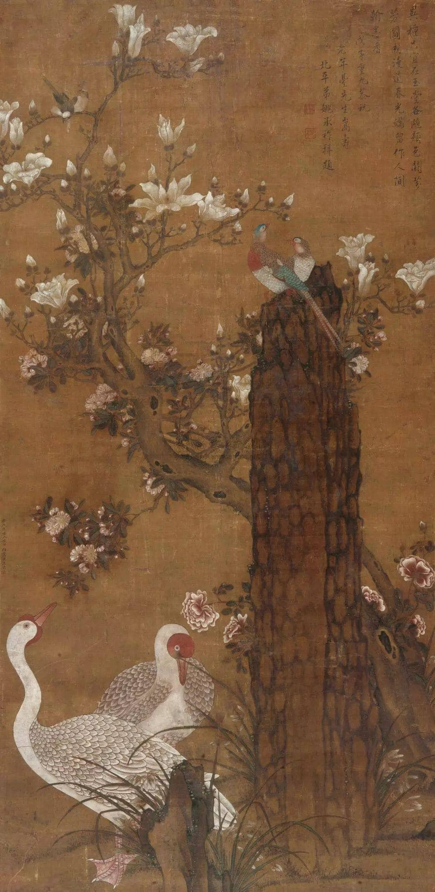

黄居寀《竹石锦鸠图》

《竹石锦鸠图》里虽有黄居采善画之怪石，但由于又有墨色浓淡对比强烈等南宋用笔特色，应是后人假托黄居采之名的作品。全画描写生动细致，是一件宋代花鸟画佳作。
《竹石锦鸠图》里虽有黄居采善画之怪石，但由于又有墨色浓淡对比强烈等南宋用笔特色，应是后人假托黄居采之名的作品。全画描写生动细致，是一件宋代花鸟画佳作。
上海博物馆现藏有被认定为徐熙传派的作品——《雪竹图》，此幅作品先以淡墨定物象的轮廓和结构，后略施淡彩，却有落墨为格的特点。从中可窥见徐熙落墨花的面貌。
图中四喜画笔精细，通过浅色晕染，翎毛滑润而有光泽，通过画睛传神更有神色、作者善画花卉，尤擅折枝，以没骨法画树枝，敷色生动。此图没有黄筌的‘‘富贵气”，而确有花卉的自然色彩。 《宣和画谱》评他“作折枝极有生意，傅色尤造其妙，这是作者通过对实景的观察和写生，艺术地再现了客观对象的物质特征和环境特点的结果。
作品描绘出深秋时节，寒风萧瑟，枯木衰草，落叶凋零，呈现出一派秋风肃杀的冷峭凄凉景象。整幅画面当中两只灰喜鹊之间，灰喜鹊与野兔之间，鸟、兽与自然环境之间，刻画的生动自然，情景交融， 充分的表现出它们之间相互呼应的关系。画中各物在作者的笔下蠢蠢欲动，大得自然野趣。
作为独立的画科，宋代的花鸟画无论在绘制技巧还是表现形式方面都已经达到高度的艺术水准，《芙蓉锦鸡图》便是其中的一幅精品。此图是描绘金秋景色的花鸟画作。 全图所用双钩法线条细劲，不仅花卉枝叶和锦鸡造型准确，芙蓉为锦鸡所压的低垂摇曳之态也能如实体现，加之色彩晕染得层次清晰，浓淡相宜，富丽堂皇中蕴涵端庄典雅的气质， 堪称“形神兼备，曲尽其妙”。就构图而言，画幅左侧集中着芙蓉、锦鸡，与右上轻盈飞舞的蝴蝶遥相呼应，使得错综的布局显得密中见疏，揖让有度。以清瘦劲健的笔体写就的诗文和精致艳丽的图画更是互为辉映，相得益彰。
《梅竹寒禽图》在不满方尺的画面上截取梅竹支干的局部，表现了梅树的老硬和竹簧丛生的气势。画中有一寒莺栖立梅梢，处于此画的显著地位，禽鸟的刻划柔和。 在技法上梅枝用笔苍劲，竹枝叶勾撇笔力坚挺，从而使整体画法显得刚柔相济。画上有楷书"林椿"题款，是为难得的宋代有款之迹。